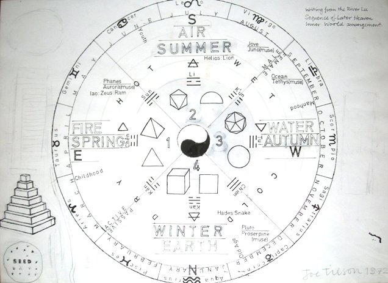

Joe Tilson RA
1928 –
Artist Biography
Joe Tilson studied at St Martin’s and then at the Royal College of Art from 1952-55. He travelled on scholarships to Italy and Spain from 1955-7 and from 1960 began a long and successful exhibiting career, including several appearances at the Venice biennale. He became associated with the Royal College’s generation of pop artists but was always prepared to experiment widely, including making assemblages from wood and metal. His paintings frequently used vibrant colours and often referred to ancient myths or belief systems. Tilson was elected to the Royal Academy in 1991 and his work is held by the Arts Council and Tate Modern amongst others.

Writing from the River Lu, 1972